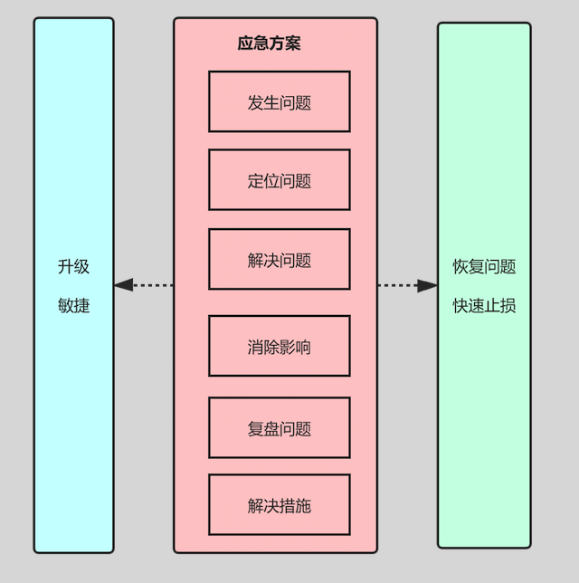
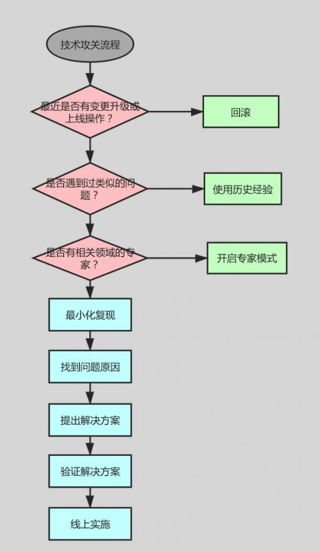

原文连接:https://www.cnblogs.com/ldws/p/12015018.html
海恩法则和墨菲定律
海恩法则指出：
每一起严重事故的背后，必然有29次轻微事故和300起未遂先兆以及1000起事故隐患。
海恩法则强调两点：
（1）事故的发生是量的积累的结果；
（2）再好的技术，再完美的规章，在实际操作层面，也无法取代人自身的素质和责任心。
根据海恩法则，一起重大事故发生之后，我们要在处理事故和解决问题的同事，还要及时的对同类问题的「事故征兆」和「事故苗头」进行排查并处理，以防止类似问题的再次发生，将问题在萌芽状态就将其解决掉，这可以作为互联网企业线上应急的指导思想。
墨菲定律指出：
如果有两种或者两种以上方式去做某件事情，而选择其中一种方式将导致灾难，则必定有人会做出这种选择。
默认定律强调一下几点：
（1）任何事情都没有表面看起来那么简单
（2）所有事情的发展都会比你预计的时间长
（3）会出错的事情总会出错
（4）如果你担心某种情况会发生，那么它更有可能发生
墨菲定律实际上是个心理学效应，如果你担心某种情况会发生，那么它更发生的可能性很大，久而久之就一定会发生。
墨菲定律给到我们技术人的警示：
对生产环境发生的任何怪异现象和问题都不要轻视，对其背后产生的原因一定要彻查。
海恩法则给到我们技术人的警示：
任何生产环境的严重故障，背后都有很多次小问题的积累，积累到一定量级之后会导致质变，进而发生更严重的故障。
所以，我们需要对线上服务，产生的任何问题征兆，不论问题大小，都要刨根问底，对任何问题都要持怀疑态度，问问自己"为什么会发生？发生的原因是什么？如何排查和解决？怎么快速恢复服务？如何避免？"等等。不能因为问题的现象不明显而忽略。
线上应急的目标、原则、方法

1、应急目标
行动的方向在关键时间正确把握，在应急过程中不能偏离目标。
生产环境发生故障，要快速优先想办法恢复服务，避免或减少因故障造成的损失，降低对用户的影响。
2、应急原则
对应应急原则总结如下：
（1）第一时间恢复系统而不是彻底查找原因解决问题，快速止损。
（2）有明显的资金损失时，要在第一时间升级，快速止损。该条用在金融领域尤为关键。
（3）当前应急负责人若短时间内无法解决问题，必须升级处理。
（4）应急过程中在不影响用户体验前提下，要保留部分现场和数据。便于恢复后定位分析问题原因。
3、应急方法和流程
线上应急必须有组织、有计划的进行。
线上应急主要分为六个阶段：
应急要有总体目标：尽快恢复问题，消除影响。不管应急的那个阶段，首要问题都是优先恢复系统问题，恢复问题不要求立马定位问题，也不一定有完美的解决方案。
一般通过经验判断，启动线上的问题预处理方案等，达到快读恢复问题的目标。同时，要注意保留部分现场，便于事后定位解决并复盘问题。
1、发现问题
通常针对系统层面来说的，问题的发现一定是借助于系统的告警、自动化监控等机制来实现的，不能由用户、业务方来告诉通知你的系统出现问题了，如果这样，你的系统出现问题已经持续了一段时间了。
监控层面，通常都是对系统层面、应用层面、资源层面进行监控。
对系统层面的监控包括：系统的CPU利用率、系统负载、内存是会用情况、网络IO负载、磁盘负载、I/O等待、交换区的使用、线程数及打开的文件句柄数等进行监控，一旦超出阈值，就及时告警。
对应用层面的监控包括对服务接口的响应时间、吞吐量、调用频次、接口成功率即接口的波动率进行监控。
对资源层面的监控包括对数据库、缓存和消息队列的监控。我们通常会对数据库负载、慢SQL、连接数等进行监控；对缓存的连接数、占用内存、吞吐量、响应时间等进行监控；对消息队列的响应时间、吞吐量、负载、积压情况进行监控。
2、定位问题
首先要根据经验来分析 ，应急团队中有人对相应问题有经验，并确定能够通过某种手段来进行恢复，则应第一时间快速恢复，同时保留现场，然后定位问题。
应急人员定位过程中可能需要与业务负责人、技术负责人、技术人员、运营和运维一起，对产生问题的原因进行快速分析。
需要考虑如下问题：
（1）问题系统最近是否进行了上线操作？
（2）依赖的基础平台和资源是否进行了上线或者升级？
（3）依赖的系统最近是否进行了上线？
（4）运营是否在系统里面做过运营变更？
（5）网络是否有波动，联系运维人员协助排查？
（6）最近的业务访问量是否正常，是否有异常流量？
（7）服务的适用房是否有促销活动？
3、解决问题
解决问题的阶段有时在应急处理中，有时在应急处理后。理想情况下，出现问题系统启动应急预案，每个系统会对各种问题设计止损、兜底、降级开关等策略。因此，发生严重问题先使用启用这些预案来恢复问题，之后再定位和解决问题。
解决问题当然要以定位问题为基础，必须清楚的明确分析出问题的根本原因，再提出解决问题的有效方案，切记没有明确原因之前，不要使用各种可能方法来尝试修复问题，这样可能还没有解决当前问题，可能会引出了另外一个问题。
4、消除影响
解决问题时，某个问题可能还没有被解决就已恢复，无论在那种情况下都需要消除问题产生的影响。
5、复盘问题
消除问题后，需要应急团队与相关方回顾事故产生的原因、应急过程的合理性，对树立处理啊的问题提出整改措施，主要聚焦一下几个问题：
（1）类似的问题还有哪些没有想到？
（2）做了哪些事情，这个事故就不会发生了？
（3）做了哪些事情，这个事故即使发生了也不会产生损失？
（4）做了哪些事情，这个事故即使法神过来，也不会产生这么大的损失？
当然，回顾事故目的不再犯类似的错误，而不是惩罚当事人。
6、避免措施
根据回顾问题提出的改进方案和避免措施，我们必须以正式的项目管理方式进行统一管理，如果有项目经理的角色，则将避免措施和改进措施一并交给项目经理去跟进；如果没有，则请建立一个改进措施和避免措施的跟进方案和机制，否则，久而久之，问题就被忽略了。
技术攻关方法论
技术攻关流程图：

技术攻关的目标是解决问题。
从问题发生的环境和背景入手，优先考虑上述图中的提到的几个问题：
1、最近是否有变更、升级或上线操作？
优先考虑这一条，特别是上线完成后收到系统告警，用户反馈的相关问题及时关注，如果因上线导致出现的问题，要第一时间回滚处理，避免扩大影响。
同时，建立健全上线流程和上线评审机制，每次上线都需要有快速回滚方案。
2、之前是否有遇到过类似的问题？
根据历史经验判断系统是否曾出现过相同或类似的问题，如果有解决类似的问题经验，可以参考快速的应用历史经验解决问题。
要求每次故障后复盘并总结故障原因，并给出问题解决方案，积累到经验库。
3、是否有相关领域的专家？
遇到了更深层次的问题，比如遭遇DDOS攻击、性能扛不住、网络故障、使用的中间件频繁告警等。类似问题先求助相关领域专家，他们积累了更加丰富的经验，或能更深入了解原因并快速解决问题。
以上流程仍然无法解决问题，就需要自己想办法做技术攻关了。
对于任何问题的分析，需要从以下几个方面入手来分析：
简称：5W
When：什么时候出现的问题？
What：什么出现了问题？
Who：谁在什么时间里发现了问题？问题影响了谁？
Where：哪里出现了问题？
Why：为什么出现了问题？
根据以上的分析，帮助你理清思路，初步对系统做判断，然后从这个系统的日志、数据、工具，并结合代码定位分析问题原因。
这里也就体现了系统中日志的重要性，好的日志能协助快速而准确的定位问题。
可以想办法「最小化复现」线上问题，最小化复现是问题产生时所依赖的组件最小化集合，容易搭建，减少了使用组件的范围，有助于迅速定位问题原因。
如果能在一个可控的环境或者仿真环境上重现问题，或者通过远程调试的手段也能协助定位问题。
定位到问题原因后，要给出解决方案。
评估解决方案对线上的影响，权衡利弊，选择最佳方案，并给出选择的原因。
将问题解决方案报备给上级进行评审，评审通过后再实施。方案需要在开发环境和QA环境进行验证，不仅仅要验证方案所解决的问题，同时，还要避免对现有功能有所影响，因此可能还需要进一步回归验证。
通过这样一系列技术攻关流程，可以保障技术攻关过程中得到完整、正确且高效的问题解决之道。
参考：分布式服务架构、原理、设计与实战
欢迎关注我的公众号，扫二维码关注获得更多精彩文章，与你一同成长~